在 Uber 规模上高效运转软件工厂
Running a Software Factory Efficiently at Uber Scale
先看这五句 / Highlights
译者补充，不是原文。
- Uber 里七成以上 PR 已算到本地或云端 Agent 头上；技能一天跑三万多次。
- 2026 年 2 月到 8 月，周活用户 7 倍、周请求 9.4 倍，总花费从 4 月起相对稳住。固定模型看，每千次请求成本从峰值降约 34%，每会话从 6 月峰值降 52%。
- 用法分成四层，越高层对成本、质量和选模型越可控；花费拆成可独立度量的几项相乘。
- 优化打在中间几项：选帕累托模型、压缩每请求 token（缓存 TTL、MCP 改走 shell/tool search/code-mode）、用上下文图减少瞎搜。
- 战略是从交互式会话转向托管 Agent 舰队：每类工作有基准和帕累托模型，比优化几千人各自的终端更划算。

引言
AI 工具已经嵌入 Uber 软件开发的每一个阶段。超过 70% 的 pull request 被归到本地或云端 Agent 头上。工程师已经在软件开发生命周期里建了超过 3,600 个 agent skill，每天执行超过 30K 次 agent skill。
在 AI Engineer 2026 大会上，我们分享了对 Software Factory 的设想，以及我们正在生命周期各处搭建的构建块和托管 Agent。随着这一设想推进，越来越多的会话不再由人发起，而是由自动化的托管 Agent 接手：代码评审、CI 失败自愈、带视觉校验的端到端 PR、on-call 告警分诊、流入 bug 的调试，以及各类需要人来评审/升级的代码维护任务。
如图 1 所示，从 2026 年 2 月到 8 月，面向全体员工（工程师与非工程师）的所有 agentic 产品的周活用户增长了 7x，周 agentic 请求增长了 9.4x。与此同时，由于全盘优化，我们的 AI 总花费从 4 月起相对稳住。
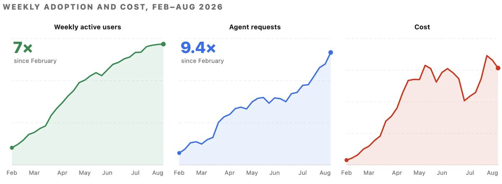
采用率、工作负载配比、模型升级都在持续变化，要单独看出我们自己的优化收益，就要把模型固定住——因为每次升级、每个模型族，行为都会变。我们从 2 月做到 7 月：每 1,000 次模型请求的成本相对峰值下降了近 34%，每会话成本相对 6 月峰值下降了 52%。
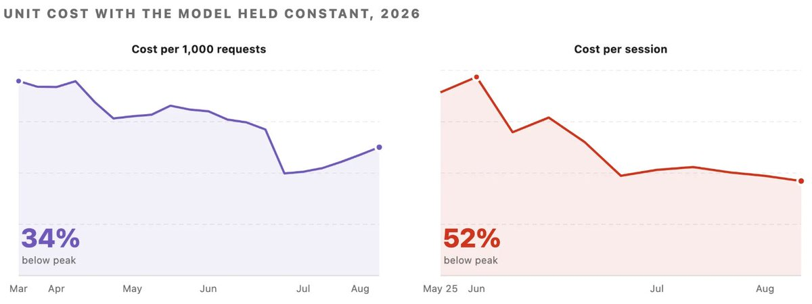
这篇博客会把我们对 software factory 的想法走一遍：Agent 会话运行的四层、我们用来拆解花费的成本方程、每一项怎么度量，以及我们如何在每一层优化这些项。
本对比中的所有定价与供应商指标均基于公开信息；成本效率的提升来自在标准档位定价之内，更智能地把 Uber 内部工作负载路由出去。我们测到的具体降本数字只属于我们的环境，你的结果会因代码库、团队规模和 Agent 工作流而不同；但对真实工作做基准、再同时优化准确率和成本，这套方法是普遍适用的。
软件工厂与成本方程
Agent 用法的四层
我们把 AI 用法分成四层，从最专门到最一般。如图 3 所示，层越高，我们对成本、质量和选模型的控制就越强。
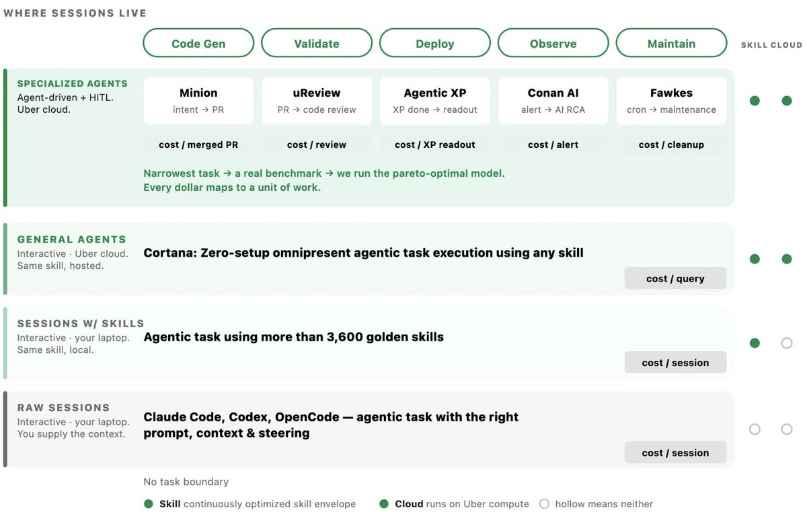
成本方程
在上面任何一层，我们都能把一次 agentic 会话的成本拆成下面这些项，并且可以独立度量、独立优化。
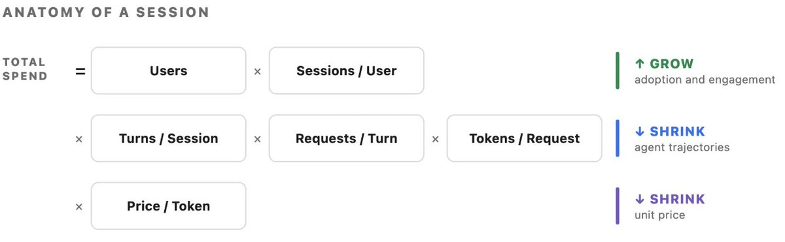
前两项代表采用与参与，我们希望在全体用户里继续涨——无论人是交互着用，还是 Agent 替他们干活。中间三项提供了优化空间：Agent 在工程师真正提出的请求之上、替自己多做的那些活。我们的力气主要花在这里。这包括帮 Agent 更快规划、减少多余 turn 或错误、优化输入 token 等机制。
我们如何度量
下面是我们每周、每月跟踪的完整指标集，用来做短期和长期的预测与规划。
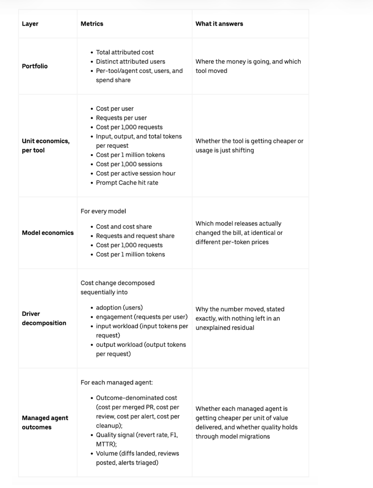
优化杠杆
接下来几节，我们会把用来优化成本方程每一部分的关键杠杆讲清楚。其中有些杠杆会影响成本方程里的一行或多行。
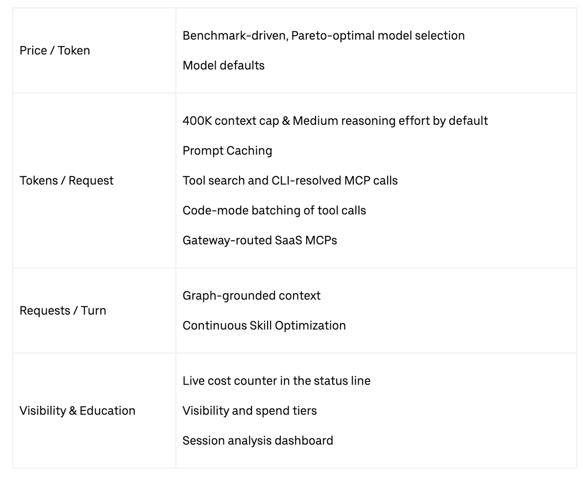
优化 Price / Token
Token 单价由供应商定。哪份工作负载跑哪个模型，由我们选。在托管 Agent 的每一层，我们都为该负载挑选最帕累托有效的模型。对我们来说，帕累托有效指的是：成本/完成任务、输出质量、模型可靠性。
由基准驱动的模型选择
选模型分四步，我们跑的每一个托管 Agent 都一样。
- 用该 Agent 的真实工作搭一套基准。
- 把 Agent 跑在一套 harness 上，前沿模型或开权模型都走同一接口。
- 切到帕累托最优的那个，并且持续切。前沿每隔几周就会动。
往前看，我们会持续用托管 Agent 汇总出来的洞察，测试并部署各种模型路由策略，从而改进工作负载表现。
例如我们用 uReview 给所有 pull request 做 AI 代码评审。基准来自带已知 bug 的真实 PR，并标成 easy、medium、hard。我们按这些 bug 打 precision、recall 和 F1，再加上每次评审的成本、延迟、超时和噪声。如图 5 所示，换模型提高了 F1，同时大幅降低了 cost/PR。图中虚线是帕累托前沿。它左下方的点，都会被某个更便宜或更好的配置压过。
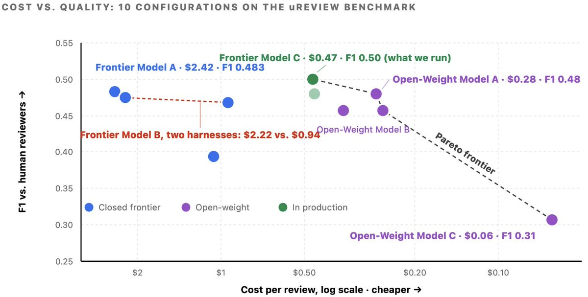
用我们大型 monorepo 里成千上万的真实 PR，内部还有一套 Uber SWE Benchmark，会让前沿模型和开权模型跑不同类型的任务。我们用它来指导所有 SDLC 托管 Agent 的选模型。
默认模型选择
在交互界面里，token 单价是固定的；但你可以有策略地把 token 分到不同模型上。主要管这件事的是两个默认设置：会话初始模型和 subagent 模型。
subagent 默认设置被证明是最有杠杆的一项，而且还会越来越重要。随着最新模型更能干好多 Agent 编排，会拉起 subagent 的会话比例一直在涨。因为 subagent 做的是输入明确、定义清楚的任务，往往不需要前沿级推理，我们默认给它们更弱、更省钱的模型，同时仍允许手动覆盖。主模型负责任务拆解和评估，subagent 去执行。
优化 Tokens / Request
每一个 turn 都会把完整对话历史、项目上下文和工具结果再发一遍。任何能减小每请求 payload 的东西，都会在整段会话里复利。
默认项
所有交互式 harness 都用统一的包装层来管安装、配置、认证和成本可见性。两套标准化默认配置会直接压低每请求的 token 消耗：
- 即便是 1M 上下文窗口的模型，也会在 400k tokens 触发自动压缩：这个阈值在模型表现、缓存突发和重复输入 token 成本之间做平衡。我们的测量显示，全舰队每请求输入 token 有明显下降。
- 推理力度默认 Medium：输出 token（含内部推理 token）在主模型上按输入 token 费率的若干倍计费；这项策略调整直接砍掉了最贵那一类 token 的花费。对很大一类任务，Medium 推理在成本与质量之间打得比较好。
Prompt 缓存策略
我们的 prompt 缓存策略由供应商 prompt cache 读写的经济账驱动。因为每个 turn 都会把完整对话历史再传一遍，把前面的上下文缓存起来，就能避免反复付全价，后续读取只需标准输入 token 费率的 0.1x。但写入溢价不同：5 分钟缓存条目是 1.25x，1 小时条目是 2x。所以选最优 TTL（Time-to-Live）取决于 turn 之间空档有多长。可用的 TTL 选项包括 Anthropic® 的 5 分钟和 1 小时，以及 OpenAI® 的 30 分钟。
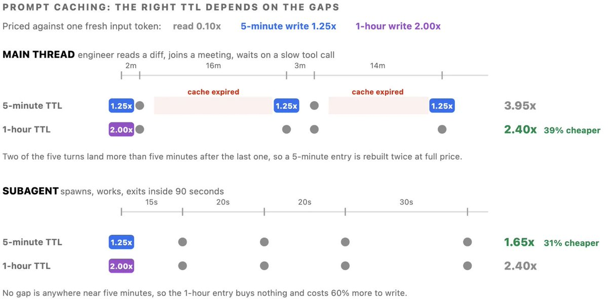
因为工程师经常让交互会话空闲超过 5 分钟，我们把默认的 5 分钟 TTL 改成了 1 小时窗口。这些频繁的空档以前会让前缀缓存失效，被迫按全价重建上下文。相比之下，sub-agent 仍用 5 分钟缓存 TTL，因为它们的执行焦点限于单个、短命的任务。
通过 Shell 执行 MCP 工具
在 Uber，所有 MCP（Model Context Protocol）交互都走统一网关。这一个入口覆盖内部和第三方 SaaS MCP 的 1,000 多个 MCP 服务器，便于集中认证和策略执行。
但标准 MCP 会把全部工具 schema 直接加载进每一次会话，不管工程师在这次会话里会不会调用。例如装了 100 多个工具时，这种预加载会给初始 prompt 加上大约 50K-70K tokens 的 schema 开销，随后每个上下文 turn 都会再发一遍。
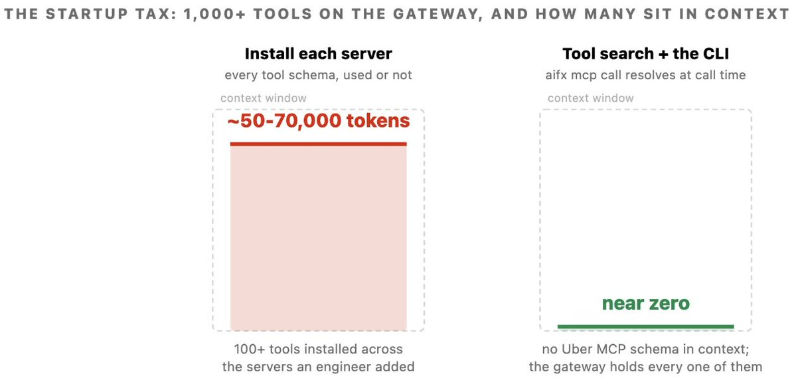
为了解决这种上下文膨胀，我们引入了两套互补的优化机制：
- CLI 工具解析：不再直接接 MCP，而是让模型执行一条 shell 命令。CLI 在调用时动态向网关解析并调用所需工具，从而把 Uber MCP schema 从会话上下文里拿掉。内部 MCP 网关上全部 1K+ MCP 工具都投影成 CLI 命令。
- Tool search：让模型搜索工具目录、按需只加载需要的工具，从而扩到几千个工具。这能缓解上下文膨胀，通常会降低工具定义占用的 token，并且在工具库变大时仍保持高选择准确率，避免大工具集带来的退化。
Code-Mode
当工具以 shell 命令直接调函数时，模型可以在同一脚本里把多个动作打成一批。这种批处理对爱聊天的工具协议特别有利。标准 MCP 工作流里，每个动作都要单独一个模型 turn：发出请求、把原始响应装进上下文窗口、再顺序处理结果。例如执行一条 SQL 查询，需要提交请求、轮询状态 2 到 5 次、再取回输出。Code-mode 把整段流程收成一个自动 Python 循环，中间轮询不进模型的活动上下文。如图 8 左侧，模型参与轮询循环，每次响应都进它的上下文；右侧，循环跑在子进程里，只把摘要送回来。
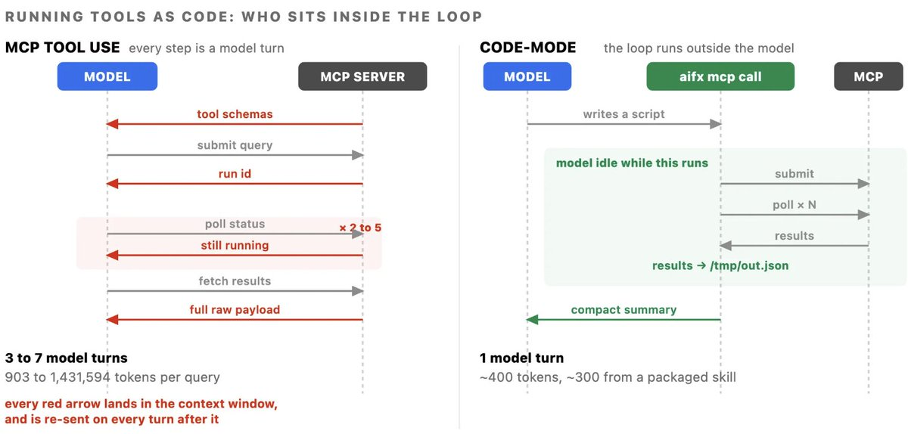
我们在同一会话里用两条路径各跑了 5 条相同的 SQL 查询来测量：
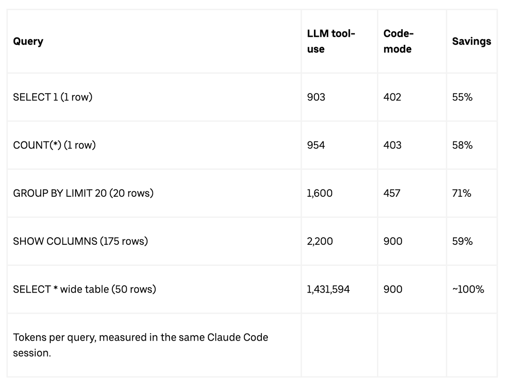
前三行点出了主要发现：即便结果集很小、远低于响应体积上限，code-mode 也能把 token 用量降 50% 以上。这些效率不是靠绕开大数据 payload，而是靠消掉不必要的开销，包括 schema 初始化、多 turn 轮询，以及多余的逐步推理。
批量工作流会把效果放大，因为本该是 N 个模型 turn 的循环变成一条脚本，节省会复利到 90% 以上。我们为最常访问的 MCP 服务器部署了 25 个以上预置的 code-mode skill，确保标准工作流默认走最省钱的路径。
SaaS MCPs
管第三方软件比管我们自己的内部服务器难得多。供应商把 MCP 服务器设计成暴露完整产品能力，因为他们没法预知某个客户具体怎么用。例如一套 workspace 套件把 49 个工具打进一个服务器，schema 大约要 ~22K tokens；消息和项目跟踪供应商分别带 34 和 46 个工具。加载两三个供应商服务器，会让 Agent 在用户还没输入 prompt 之前，就已经带着比正在编辑的文件还多的 schema 开销。
为此，我们把 SaaS MCP 服务器也走 MCP 网关，机制和内部 MCP 一样。我们还把这些 MCP 全部暴露成 CLI，任何 agentic 表面都能调。另外，我们在 code-mode 插件里为每个服务器写专用 skill，把常见工作流封装起来。这让许多 SaaS 供应商上的 agentic 工作流变得高效。
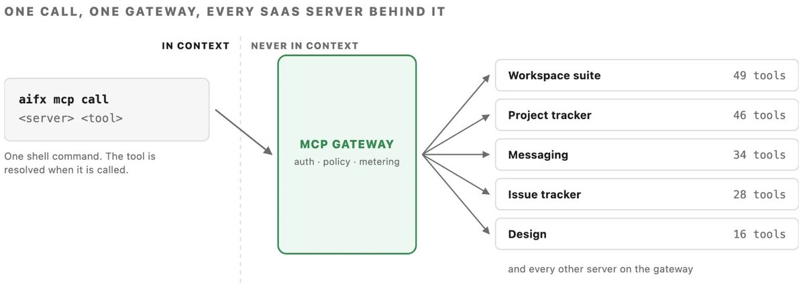
优化 Requests / Turn
没有 grounding 的 Agent 失败得慢，而不是失败得便宜：它会反复把越来越大的上下文窗口发出去，再搜一个地方。事先提供更丰富的信息，仍然是降低这种搜索开销最有力的杠杆。
上下文工程
在 Uber 庞大的代码库与数据生态里——数亿行代码、成千上万张表——Agent 把大多数 turn 花在找信息上，而不是写代码。为此我们做了 AI Context Graph：一张统一的网络，含 24 million 个节点和 80 million 条边，覆盖 86 种节点和 117 种边类型。它整合了 30 多个内部系统的数据，包括服务、工程团队、事故日志、pull request、架构设计文档、部署、数据集，以及历史上的表使用查询，并让任何 Agent 都能用自然语言查询。
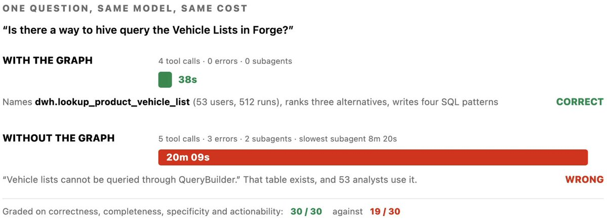
有 grounding 的 Agent 查了历史用量，找到被 50 多名分析师用过的那张具体的表，38 秒给出答案。反过来，没有 grounding 的 Agent 看不见那张表；它花了 20 分钟翻服务代码、拉起 2 个 subagent、撞上 3 次错误，最后错误地得出数据集不可查询的结论。
可见性与教育
这里的杠杆是可见性和反馈环，让工程师和 Agent 更快收敛。
状态栏
我们在 harness 状态栏放了一个实时成本计数器，跟踪每个用户在单个 harness 以及所有 harness 上的实时花费。
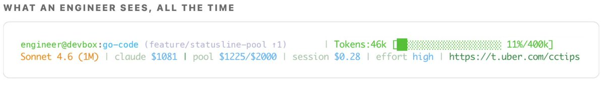
可见性与花费档位
为了避免强加硬顶，我们做了实时花费跟踪和自动轻推：
- 状态栏实时计数器。正在跑的会话成本始终显示在终端里。
- Harness 池。所有交互式 harness 共用一档，而不是按工具拆预算。托管 Agent 另有独立档位。
- Slack 轻推。在预期花费的 50/80/100% 告警，让工程师有时间做安排。
- 好走的审批流。升档由经理签字，并快速生效。
- 成本检查 skill 与提示。一个看板 skill，按需拆成本，并在状态栏做实时辅导。
这些让工程师能自己评估任务 ROI，同时抑制失控花费。
会话分析看板
状态栏能标出一次会话的总支出，但看不到成本驱动因素，也给不出可执行的效率步骤。一般性指导只能给高层原则，评不了单个开发者的工作流。会话分析看板通过直接检查会话产物来补上这个缺口。
它直接做进运行时，零配置、无需 opt-in。执行 cost dashboard skill，会分析该用户在本地和远程云沙箱、在其使用的全部 harness 上的所有会话轨迹。它不产出一个汇总指标，而是在会话里标出 16 种不同的反模式，每种配上财务影响和针对性修复。其中一些类别包括：
- 次优模型路由：把 Sonnet 轻松就能完成的简单多 turn 会话跑在 Opus 上。
- 上下文窗口膨胀：大块 MCP payload（例如 40KB 的响应）留在上下文里，后续 turn 反复计费。
- 缓存过期不经济：长时间中断后再恢复会话，过期的 prompt cache 迫使按全价重建前缀。
- Prompt 初始化开销：用户还没输入，就预加载 100,000 tokens 的系统指令和工具定义。
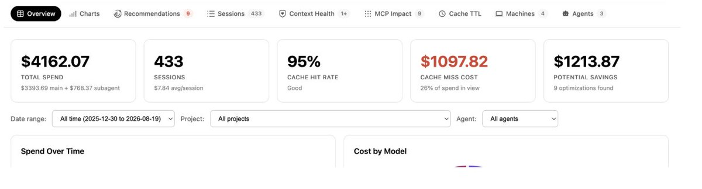
下一步？
正在推进的事项包括：
- 扩大托管 Agent 舰队：每一个新 Agent，我们都走同一条路线图：定目标结果指标、组评估基准、找到帕累托最优模型。这套系统方法旨在把 SDLC 的每一阶段往工厂成熟度模型的更高处推。
- 动态模型路由：我们正在把基准覆盖扩到更多编程语言、代码仓库和 Agent 模态。模型能力差异很大，有效的模型路由高度依赖全面评估。
- 加深上下文图集成：我们正在让更广的一批自主 Agent 用上图查询能力。
- 把会话分析演进成实时开发者指导：从周期性批量检测反模式，转到持续轨迹监控，目标是把个性化的实时效率建议直接送给工程师。
- 持续改进 Skill：我们在做一套自动化办法，从 agent skill 执行里记录 papercut，再根据收集到的轨迹自动生成 skill 更新。
结论
管住、压住不断上涨的 AI 编码开支，同样是一项可下手的工程问题。靠消掉浪费的、零价值的 token 消耗，而不是只靠更低单价或降级工具，我们把用量扩了 7x，同时在所有指标上降低了单位成本，并提升/维持了输出质量。
核心战略转变，是从交互式开发者工作流走向完全托管的 Agent。把 SDLC 工作负载迁进托管环境，就能对模型路由、执行 harness 和运营花费有完整控制。优化一支专门的托管 Agent 舰队——每个都配上专用评估基准和帕累托有效模型——本质上比优化几千名工程师各自的终端会话更省钱、也更能扩。
致谢
这是许多工程师的集体努力：他们在 Uber 规模上搭建最有效率的积木来实现 Software Factory，同时确保我们花出去的每一个 token 都有 ROI。我们要感谢参与 Software Factory 各项努力的核心团队，名单如下：Abhishek Bhatia, Adam Huda, Aditya Patel, Alok Srivastava, Ameya Ketkar, Anil Purohit, Atakan Kandemir, Ben Chou, Brandon Barker, Danielle Yim, Deepanshu Mehndiratta, Gaurav Gill, Israel Marban, Jason Varbedian, Karen Xu, Lei Shi, Mager Mager, Meghana Somasundara, Peng Liu, Preet Inder, Qiushen Wang, Rush Tehrani, Shesh Patel, Shiven Tripathi, Shubham Gupta, Stas Khalup, Ting Chen, Tse-Shi Wang, Ty Smith, Vikram Hullukunte, Weiqiang Wang, Will Bond.
也要感谢 Johannes Gehrke、Mattie Toia、Sumanth Sukumar 和 Praveen Neppalli Naga 的领导。
Anthropic® is a registered trademark of Anthropic PBC.
Claude Code™ and Claude® are trademarks of Anthropic, PBC.
OpenAI® and its logos are registered trademarks of OpenAI®.